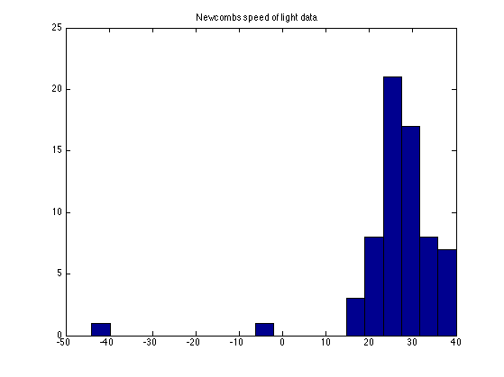
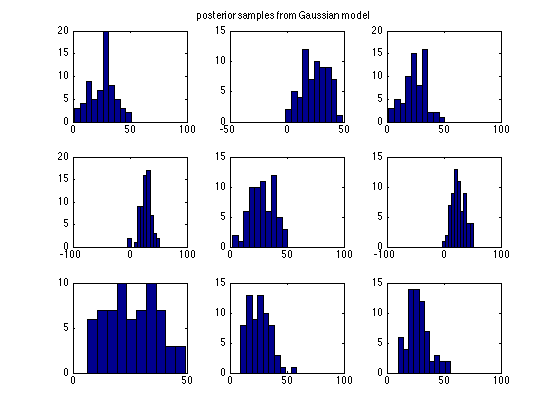
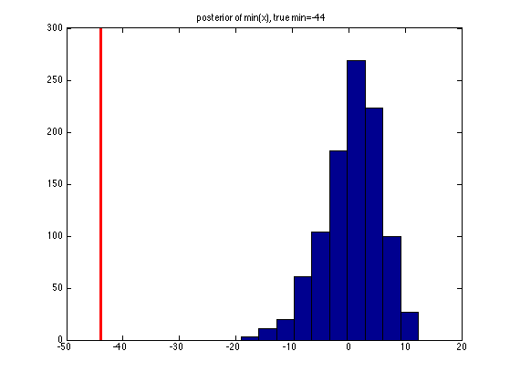
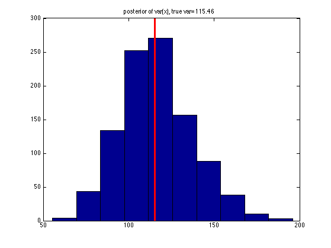

Test to see if Newcomb's speed of light data is Gaussian
Similar to Gelman04 p77, except we use a plug-in approximation See newcomb.m for the Bayesian version
% This file is from pmtk3.googlecode.com setSeed(0); % Data from http://www.stat.columbia.edu/~gelman/book/data/light.asc D = [28 26 33 24 34 -44 27 16 40 -2 29 22 24 21 25 30 23 29 31 19 ... 24 20 36 32 36 28 25 21 28 29 37 25 28 26 30 32 36 26 30 22 ... 36 23 27 27 28 27 31 27 26 33 26 32 32 24 39 28 24 25 32 25 ... 29 27 28 29 16 23]; n = length(D); % MLE mu = mean(D); sigma = std(D); % generate posterior samples S = 1000; rep = normrnd(mu, sigma, S, n); % Plot data figure(1); clf hist(D,20); title('Newcombs speed of light data') printPmtkFigure('newcombTruth2'); % Plot sampled data figure(2); clf for i=1:9 subplot(3,3,i) hist(rep(i,:)) %set(gca,'xlim',[0 50]) %title(sprintf('synth %d', i)) end suplabel('posterior samples from Gaussian model', 't') printPmtkFigure('newcombSynth2'); % compute distribution of test statistic test = @(x) min(x); for s=1:S testVal(s) = test(rep(s,:)); end testValTrue = test(D); figure(3);clf hist(testVal); title(sprintf('posterior of min(%s), true min=%d', 'x', testValTrue)) hold on line([testValTrue, testValTrue], get(gca,'ylim'), 'color', 'r', 'linewidth', 3) pvalBayes = mean(testVal >= testValTrue) printPmtkFigure('newcombTestStat2'); % Make the test statistic be hte sample variance %test=inline('var(x)','x'); test = @(x) var(x); for s=1:S testVal(s) = test(rep(s,:)); end testValTrue = test(D); figure(4);clf hist(testVal); title(sprintf('posterior of var(%s), true var=%3.2f', 'x', testValTrue)) hold on line([testValTrue, testValTrue], get(gca,'ylim'), 'color', 'r', 'linewidth', 3) pvalBayes = mean(testVal >= testValTrue) printPmtkFigure('newcombHistoVar');
ans =
5.411159667968750e+02
pvalBayes =
1
pvalBayes =
0.485000000000000
   